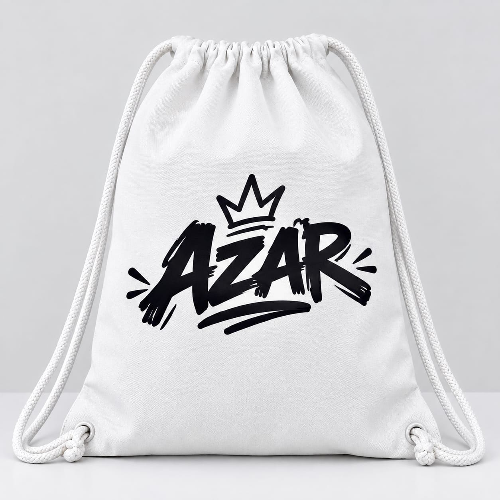

Ramah di kantong
Solusi merchandise custom dengan harga yang disesuaikan untuk kebutuhan pelajar.
Tas serut sablon custom
AZAR membuat tas serut sablon yang bisa kamu request sendiri. Cocok untuk pelajar, kelas, komunitas, dan acara spesialmu.
Tentang AZAR
AZAR dibangun dari keinginan untuk menghadirkan bisnis yang dekat dengan dunia grafika—mulai dari sablon hingga buku jahit. Saat ini, kami menghadirkan tas serut sablon custom yang praktis, terjangkau, dan dibuat untuk menampilkan identitasmu.
Produk kami

Produk unggulan
Tas ringan untuk membawa kebutuhan harian. Tambahkan desain, nama kelas, logo komunitas, atau visual favoritmu agar tas terasa lebih personal.
Kenapa AZAR?
Solusi merchandise custom dengan harga yang disesuaikan untuk kebutuhan pelajar.
Punya desain sendiri? Sampaikan idemu dan wujudkan menjadi sablon tasmu.
Setiap tas dapat menjadi media untuk menunjukkan kelas, komunitas, atau gayamu.
Kata pelanggan
Tambahkan cerita pelanggan tentang pengalaman memesan di AZAR.
Nama pelanggan · Produk yang dipesanTambahkan cerita pelanggan tentang kualitas dan hasil sablon tasnya.
Nama pelanggan · Produk yang dipesanTambahkan cerita pelanggan tentang desain request mereka.
Nama pelanggan · Produk yang dipesanMulai pesan
Kirim desain atau ceritakan kebutuhanmu melalui WhatsApp. AZAR siap membantu mewujudkannya.
Hubungi AZAR